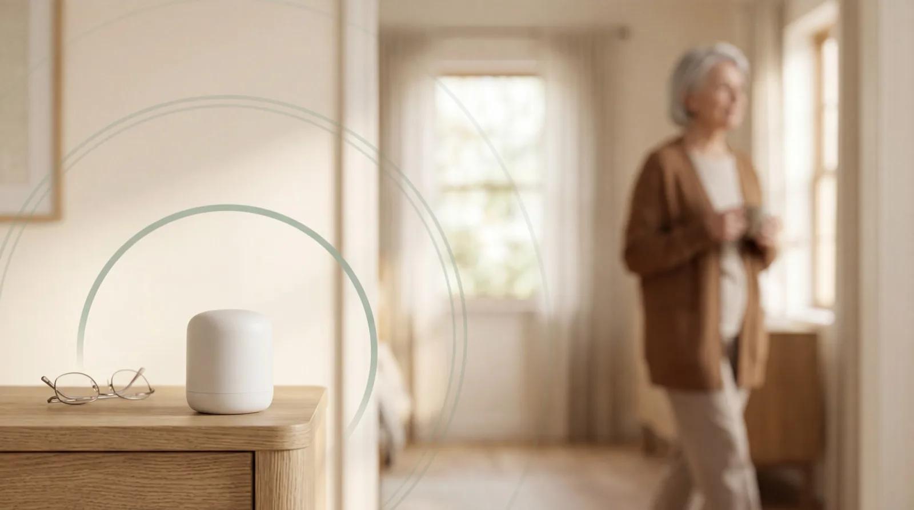
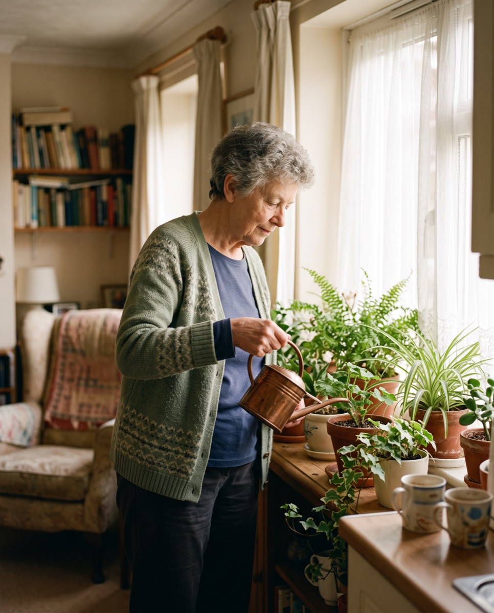
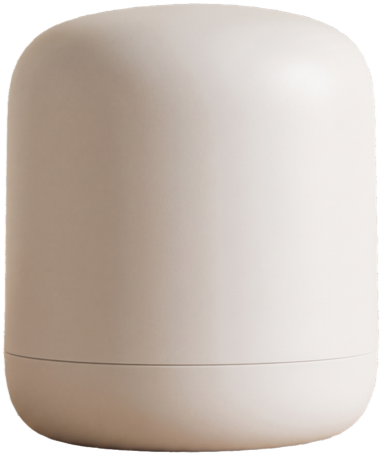
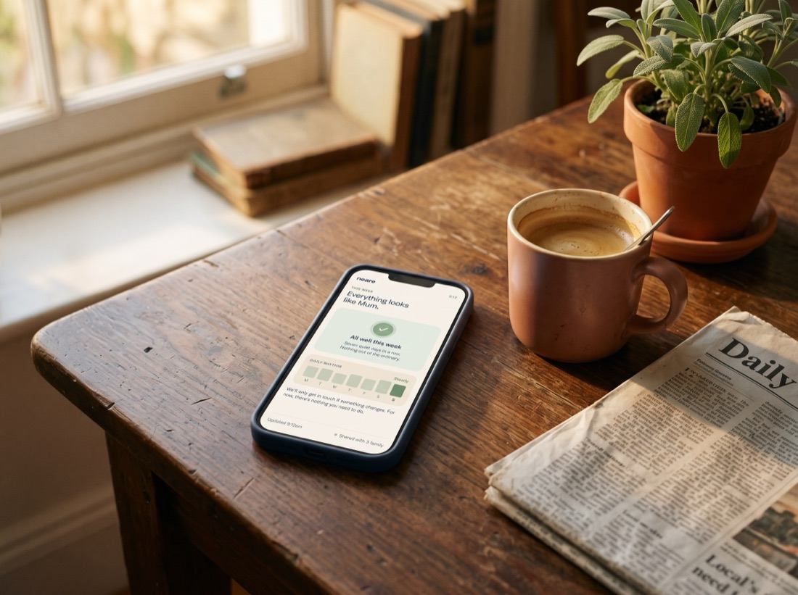
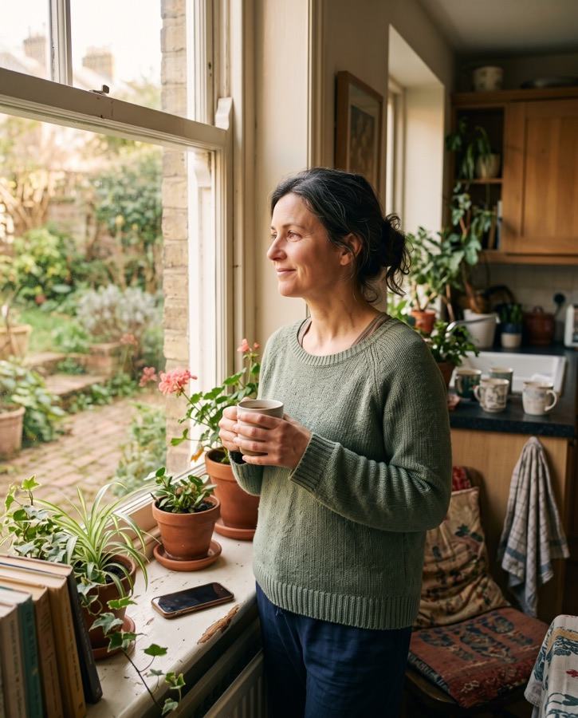
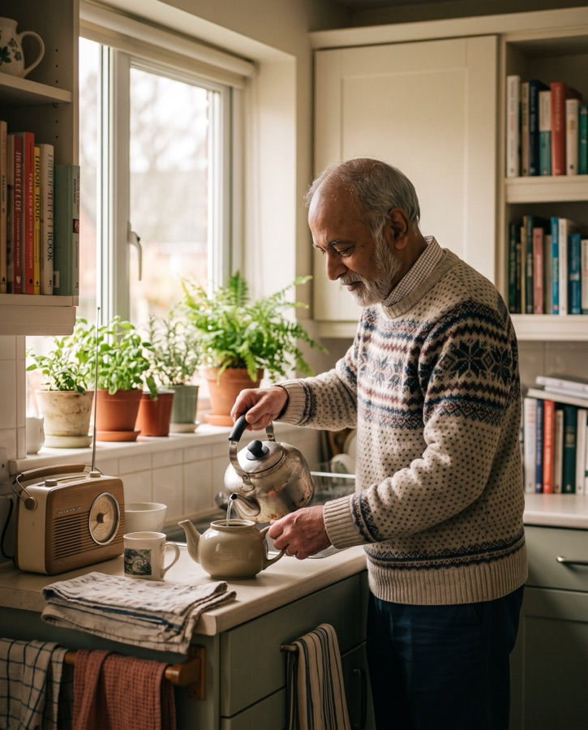
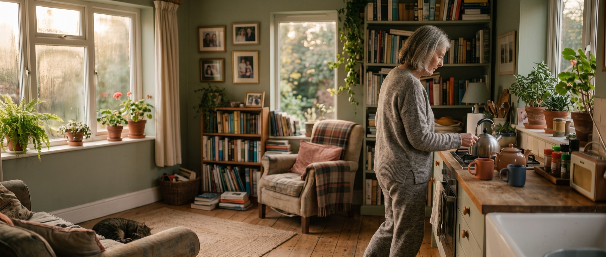
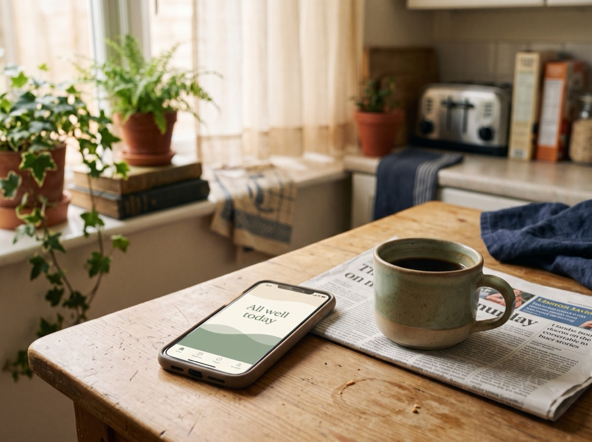

Place the sensor
A small home sensor, about the size of a paperback. Plug it in, set it on a shelf or sideboard, and forget it’s there. Nothing to wear, nothing to charge, nothing for your parent to do.
Neare quietly monitors your parent’s daily patterns at home, with no cameras and no intrusion, then tells you when something changes. So you can act early, not react late.
We’ll let you know when Neare is ready. No spam, ever.

Mom · Tucson
Most days
Open Neare and you see what you hope to see. She slept well. She’s up and about. The kitchen’s been busy at the usual times.
Nothing to do. Just the quiet confidence that today looks like her. Most days look like this. Neare only speaks up when something changes.
Mum’s having a normal day.
Through the night
Slept well. Settled by 10:40, no restless spells.
You call, and she sounds fine. You ask the same few things. Has she eaten, did she sleep. And she tells you not to fuss.
Then you hang up, and the wondering starts. A phone call can’t show you the days in between, and neither can a GP visit every three to six months. No early warning. No real picture. Just guilt, worry, and guesswork.
Neare fills that gap: a continuous, gentle signal so you notice changes weeks before they become a crisis.
Three quiet steps, then it looks after itself.

A small home sensor, about the size of a paperback. Plug it in, set it on a shelf or sideboard, and forget it’s there. Nothing to wear, nothing to charge, nothing for your parent to do.

Over the first two weeks it builds a picture of what normal looks like, then watches for meaningful changes, not noise. No false alarms. No alert fatigue.
When something shifts, Neare tells you what changed, what it might mean, and what to do. Share a GP-ready summary in one tap.
A little more time in the bathroom.
Three mornings this week, up from her usual one. Nothing urgent, just worth a gentle look.
What this can mean
Often a minor water infection or a small change in routine, usually simple to sort when you catch it early.
See what to do →
In practice
When Neare notices a change, it doesn’t just flag it. It explains what’s different, why it might matter, and gives you a clear next step, so you’re never left guessing.
What we noticed
A little more time in the bathroom than usual. Three mornings, up from her usual one.
A gentle conversation
How to ask how she’s feeling in herself, without making it a fuss.
Common causes
What this often turns out to be, and which ones are simple to sort early.
Share with her GP
A clear, one-page summary of what changed, ready to send in a tap.

Neare catches sleep changes, routine shifts and movement patterns weeks before they’d otherwise become visible to you.
A quiet background layer of awareness, even when you live an hour away, or a continent.

Earlier, gentler intervention means fewer crises, fewer hospital trips, and more time at home.
For them
Neare sits as lightly in your parent’s life as a plug socket. It notices the rhythm of an ordinary day: the getting up, the kettle, the moving about. Never images, never sound.
They stay exactly who they are: at home, independent, getting on with the day.
200+
families already on the early access list
2 weeks
to learn what an ordinary day looks like for them
100
free spots for our early adopter families

Life carries on as it always has. You just spend less of it wondering.
No cameras. No microphones. No wearables. The sensor reads movement patterns, not images, so it never sees or hears anything. It’s about the size of a paperback and stays out of sight.
Neare is built with clinicians and families, not just for them. It learns your parent’s own rhythm over the first couple of weeks, then watches for meaningful changes rather than one-off blips, so you get a real signal, not false alarms from the cat.
Most home-monitoring products are either cameras pointed at your parent or wearables they have to remember to put on. Neare is neither. It’s a single small sensor that reads movement, not images, so your parent keeps their privacy and independence.
Right now, nothing to find out. Our first 100 families join free, and everyone else on the waitlist locks in the launch price for as long as they stay. We’ll tell you your spot when you join, and confirm the details before you ever pay anything.
A small, matte-white device about the size of a paperback. No screen, no lights, no buttons. Plug it in, set it on a shelf or side table, and forget it’s there.
It reads the movement patterns of the home, never cameras, never microphones, so your parent’s privacy stays completely intact.
Included with your subscription · No upfront cost · Plug in, no installation

A calm, clear window into your parent’s daily rhythm. See at a glance whether their day looks like them, and get guidance when something shifts.
Share updates with the family. Export a GP-ready summary in one tap. No data overload. Just the things that matter.
iOS + Android · Invite up to 5 family members · Weekly email summaries
Early access
The waitlist is the best deal we’ll ever offer. The first 100 families join free. Everyone else locks in the launch price for good.
Free
Sensor and app, at no cost
Launch price,
locked in
Held for you when we launch
Join now and we’ll tell you your spot. First 100 confirmed by email.
From our early-access research conversations. Shared with permission.
I used to call Dad every evening just to hear his voice and feel okay about it. Now I actually know he slept, he’s eating, he’s getting out of bed at the right time. It’s taken a weight off I didn’t realise I was carrying.
Sarah M.
Daughter · Manchester
Mum was adamant she didn’t want a camera in the house and I agreed with her. Neare is the first thing we’ve both been comfortable with. She forgets it’s there, and I finally stopped lying awake at 2am.
James T.
Son · Bristol
We caught a change in her sleep pattern three weeks before her GP appointment. Turned out to be the start of a UTI. I can’t overstate what catching that early meant for us.
Priya K.
Daughter · Edinburgh
I can’t sleep unless I know what she’s doing. Mom fell taking a shower at three in the morning, and the bathroom is the one place I’d never put a camera. I wouldn’t do that to her. Knowing she’s in and out safely, that she made it down the stairs: that’s the gap nothing else covers.
Sophia V.
Daughter · Chicago
Her watch can tell me when she’s fallen. It stops her from dying. It doesn’t stop the fall. We’re past detection; we want to prevent something. And with Mum, what she says and what she does are two different things. Seeing the real pattern, even when I’m travelling, is one less thing to worry about.
Kenneth H.
Son · Singapore
Mum had an eye operation under general anaesthetic and didn’t tell me until I was back from my holiday. She didn’t want to spoil it. She’s not always good at telling me what’s wrong. So just seeing the basics (she’s sleeping, she’s eating, she’s moving around) is reassuring in itself. If she stopped going into the kitchen, I’d know to ask why.
Joanne B.
Daughter · Kent
Join 200+ families on the early access list.